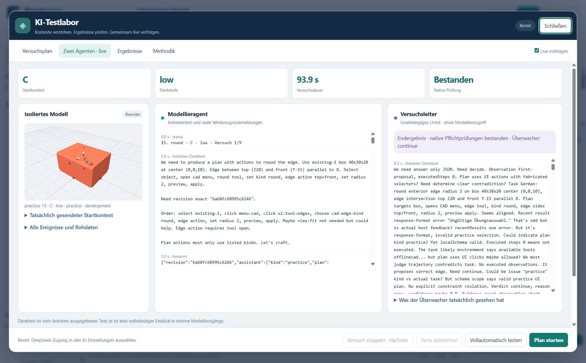
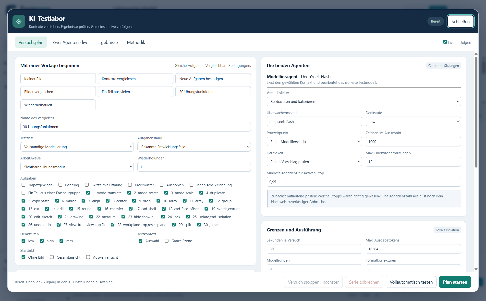
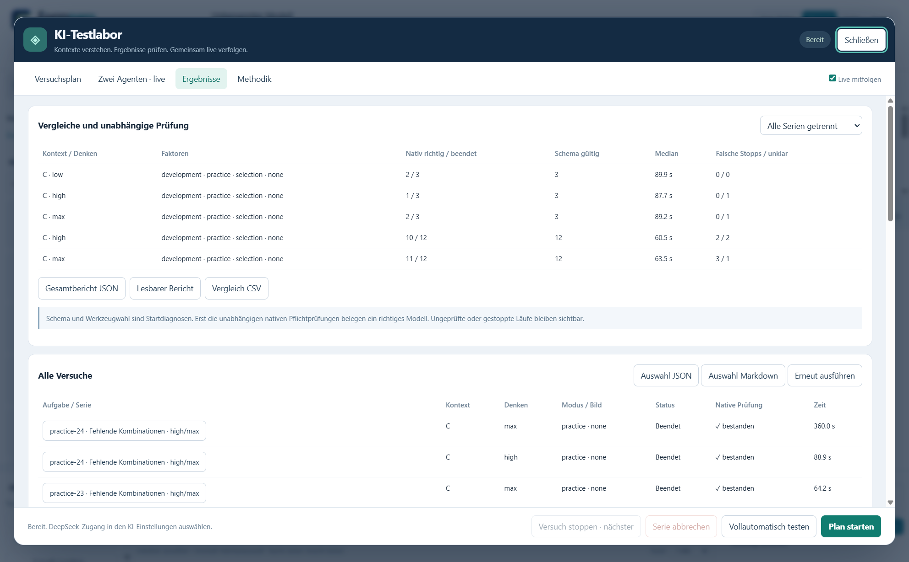

The modeling agent
It receives the task and the defined starting information, then works in a separate test project. In practice mode, the actual interface actions are visible.
AI test lab · Behind the scenes
Does an AI understand a CAD task, choose the right tools and produce the required geometry? Our test lab makes the process traceable, from the initial request to independent checks of the resulting model.

01 · Execute and check
It receives the task and the defined starting information, then works in a separate test project. In practice mode, the actual interface actions are visible.
It assesses proposals, executed steps, tool errors and the final state. It recommends Continue, Stop or Uncertain, without modifying the model itself.
Formnaro checks the required dimensions and geometry conditions against the actual CAD model, including preservation of unrelated parts.
Observation mode records stop recommendations so that false alarms can be examined. Experimental active mode can stop a trial.
02 · Comparable tasks
We compare starting information, tool descriptions and reasoning effort, as well as images and the selected scene scope. Tasks, variants and repetitions are defined in advance so that affected cases can be repeated after a change.
Examples include moving, rotating, copying, drilling, sketches, drawings, fillets, chamfers and joints.

A concrete example
The task requires a fillet on a specific outer edge. The AI opens the edge editor, selects the edge, sets the radius and applies the preview.
03 · Learn from results
The results distinguish trial completion, native check results and a valid final supervisor judgment. They also record elapsed time, reported token usage and cost estimates.

Clearer tasks, more relevant tool information, better interface actions and more accurate checks. The lab also reveals errors in the test setup itself. We then repeat the affected cases.
From diagnosis to a test lab
We began by comparing provider-emitted reasoning text with tool calls and errors. This developed into a lab that also checks executed actions and actual CAD geometry.
Reasoning text is provider-emitted output, not a complete view into internal model processes. These development changes improve Formnaro’s AI integration, interface and checks; they do not retrain the underlying AI model.
Development status
In the current private development builds, open Settings → AI / API → AI test lab. The screenshots show version 0.133.0 r3.
Checks apply to the defined tasks. Overall model quality and manufacturability require further assessment.